Easy Genomics:
Is it really that easy?
Kelsey Florek, PhD, MPH Senior Genomics and Data Scientist Wisconsin State Laboratory of Hygiene September 13, 2023

- What is Easy Genomics
- Easy Genomics: Minimal Viable Product (MVP)
- AWS HealthOmics
- Demo
Easy Genomics
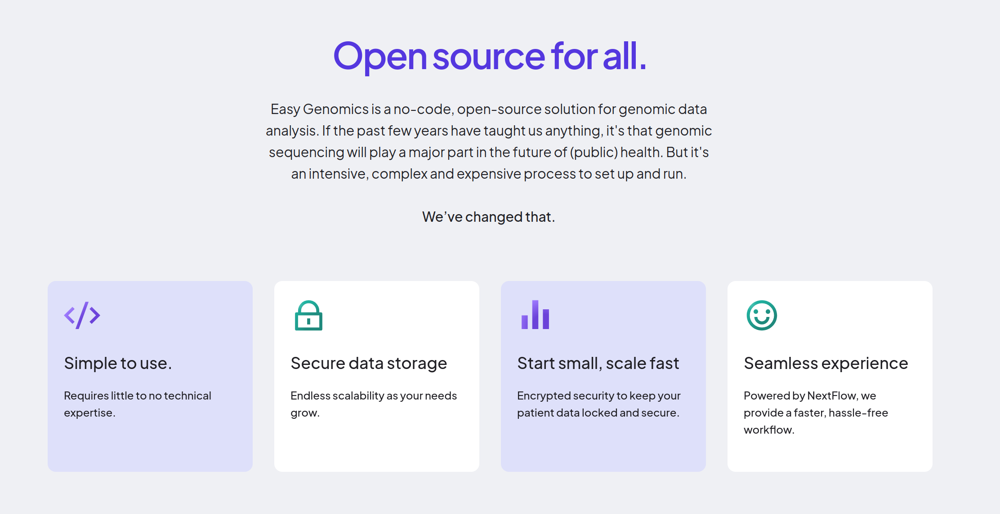Easy Genomics

Easy Genomics
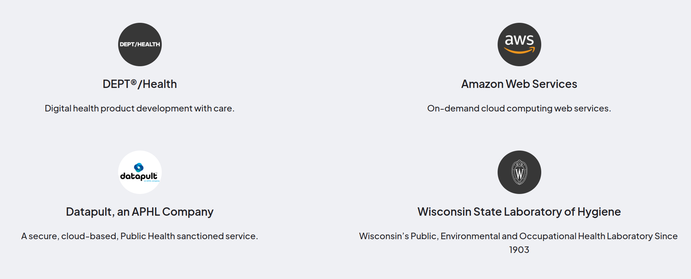Easy Genomics
- The Needs:
- User accounts and authentication
- Simple process for uploading and/or submitting genomic sequencing data for analysis
- Allow users to select and easily configure analyses
- Access to analytical workflow status and results
What is Easy Genomics- Easy Genomics: Minimal Viable Product (MVP)
- AWS HealthOmics
- Demo
Easy Genomics
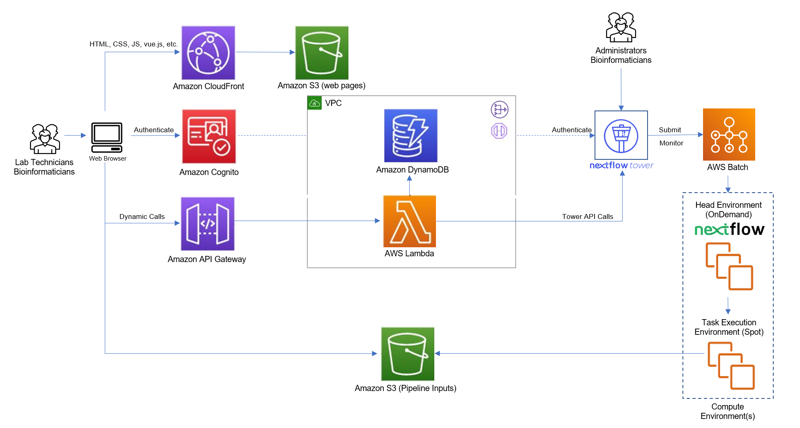Easy Genomics - Minimal Viable Product (MVP)
- 3 user types: super admin, lab admin, user
- supports multiple "labs" with separate workflows and users
- enables data submission through web interface into AWS S3 and automated samplesheet generation
- runs analytical workflows through Nextflow Tower API
What is Easy GenomicsEasy Genomics: Minimal Viable Product (MVP)- AWS HealthOmics
- Demo
AWS HealthOmics
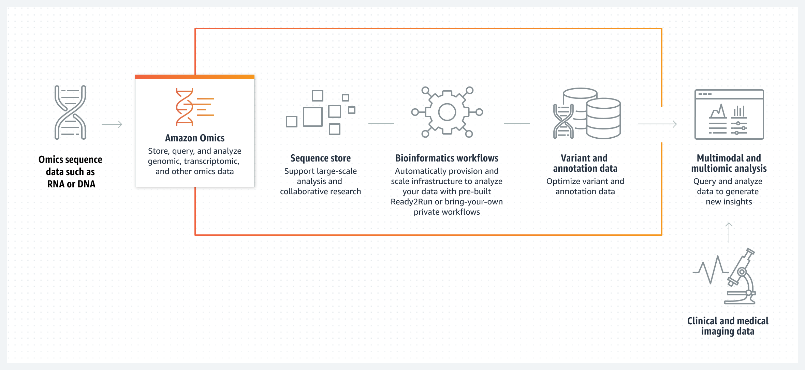AWS HealthOmics
- removes the need to configure and manage complex cloud infrastructure involving AWS Batch / EC2
- provides tailored storage for sequence and variant data
- supports Nextflow & WDL workflows
- requires staging workflow containers and data
- challenging workflow configuration
- accessible through API
Easy Genomics - AWS HealthOmics: Proof of Concept (PoC)
Develop an open sourced solution powered by AWS’ HealthOmics, that will provide an easy-to-use, web-based interface that will facilitate access to key genomic sequencing pipelines for all lab technicians, with limited training and no technical skills.
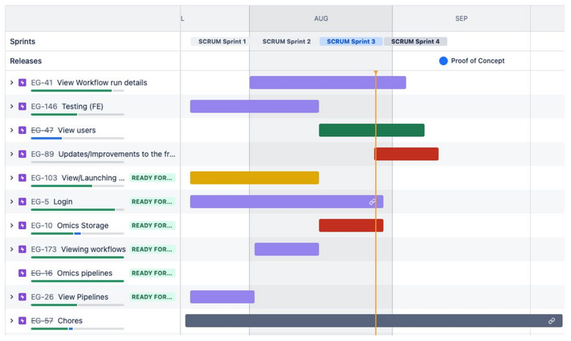
WSLH - Easy Genomics
Read 1
Read 2

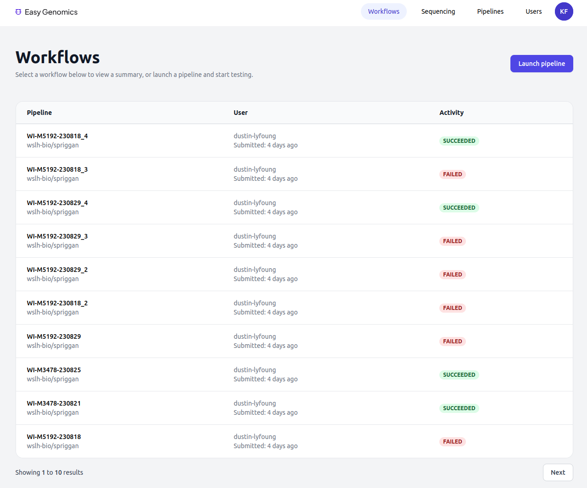
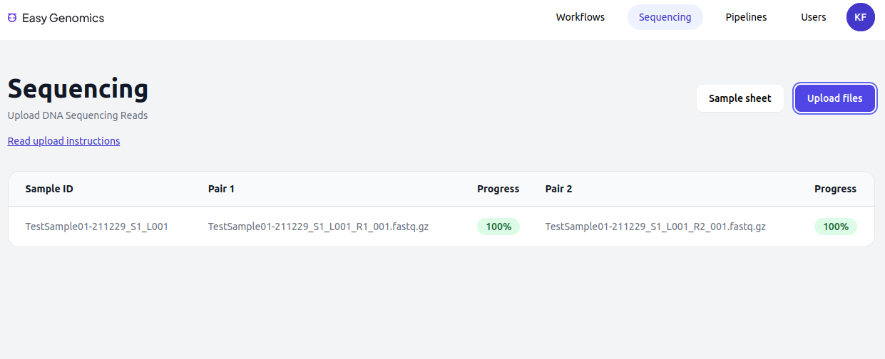

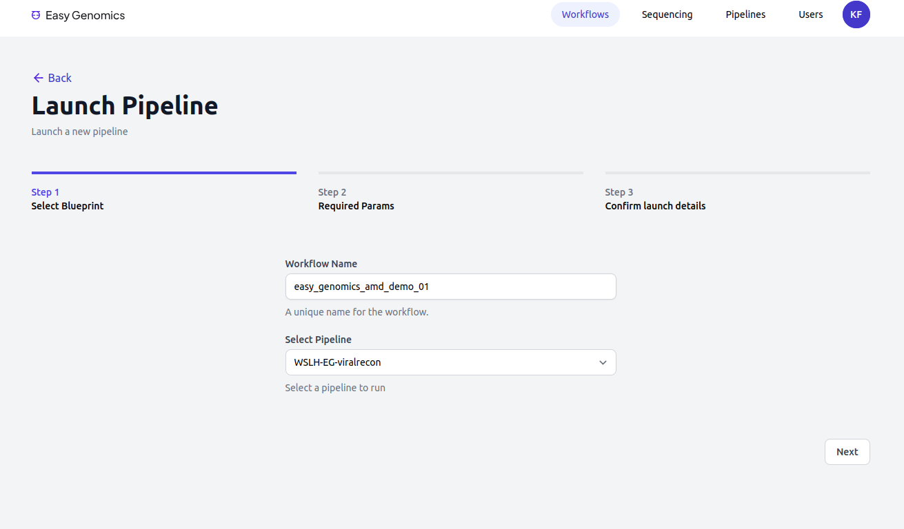
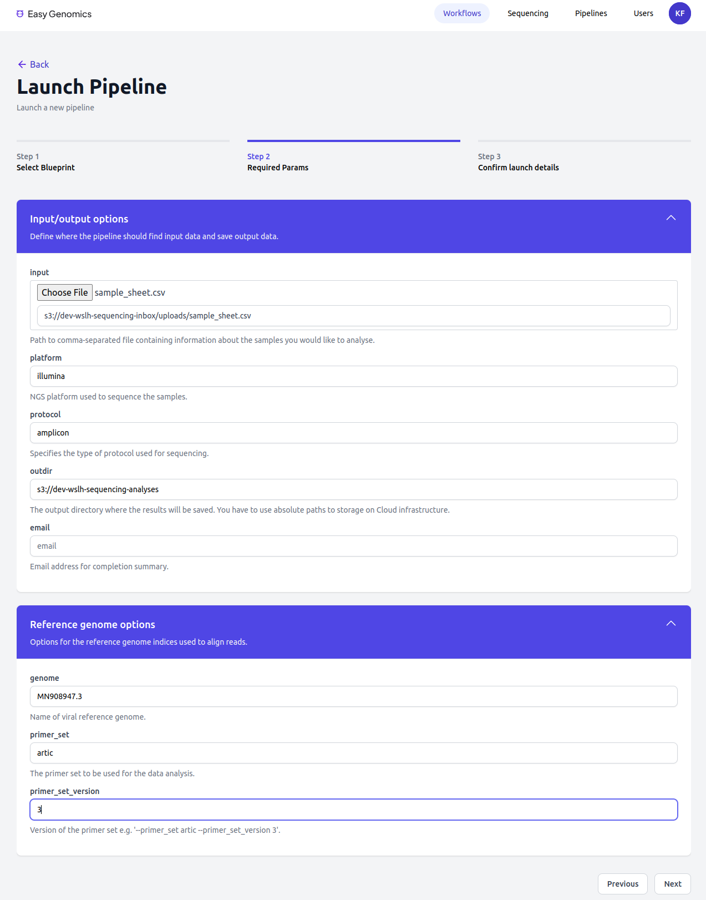
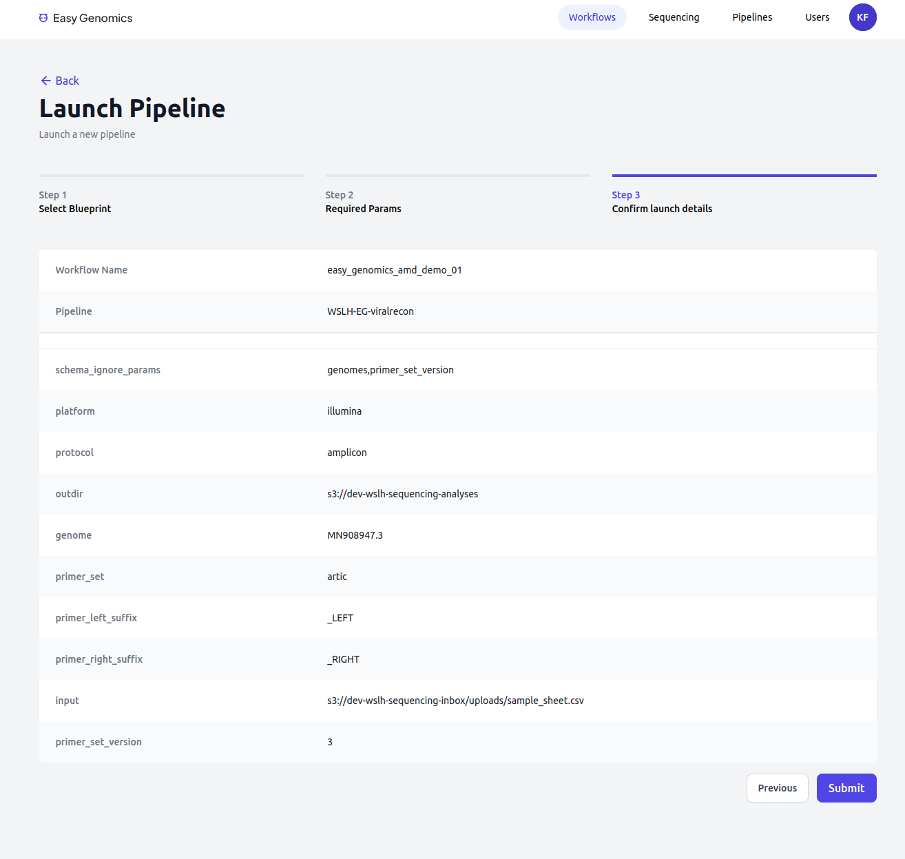

Abigail Shockey, PhD
Christopher Jossart, MPH
Dustin Lyfoung, MS
Easy Genomics - AWS HealthOmics: Development Roadmap
Easy Genomics - Open Source and Community Driven
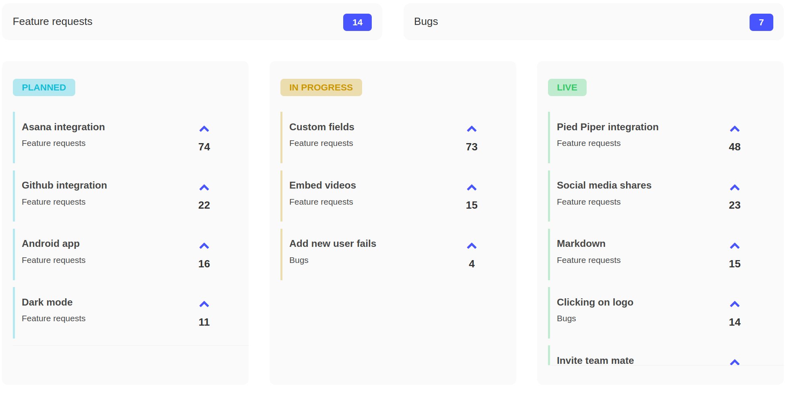What is Easy GenomicsEasy Genomics: Minimal Viable Product (MVP)AWS HealthOmics- Demo
Demo
Read 1
Read 2
Acknowledgments
Special Thanks
- 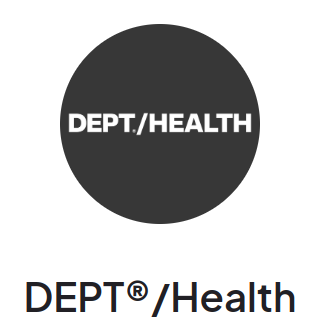
- Dr. Dawn Heisey-Grove, MPH PhD
Public Health Analytics Leader, AWS - UW-Madison Public Cloud Team
- UW-Madison Office of Cybersecurity